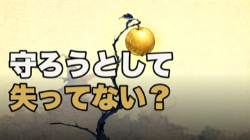
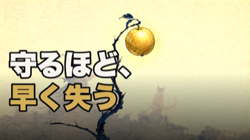
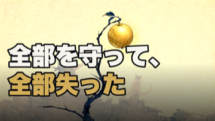

HaQei / アニメと易経 ・ サムネ ワード検証
ep42 サムネのコピー — どのワードがベストか
画像は推奨のA案（金グロー＋金の果実）で固定。ワードだけ3案で比較。
勝ち組コピーの傾向：①逆説の言い切り（推しの子「盛った自分が本物を隠す」・ドラえもん「満たされた瞬間から壊れ始める」）②固有名＋正体/理由（ルフィ・エレン・煉獄）。共通するのは「言い切り＋好奇心ギャップ」。現行の「〜してない？」は2人称の軽い自己チェックで引きが弱い＝言い切りに寄せる。
案1（現行・弱い）

「守ろうとして／失ってない？」＝2人称yes/no。柔らかいが好奇心ギャップが弱く、勝ち組の言い切りに負ける。
案2（推奨）: 逆説の言い切り

「守るほど、／早く失う」＝命題直球の逆説断定。簡潔で「なぜ？」の好奇心ギャップが立つ。勝ち組の言い切り型に一致。
案3: 過去形の告白（自己投影強い）

「全部を守って、／全部失った」＝過去の後悔の告白＋「全部…全部」の反復。自己投影（これ自分だ）が最も強い。やや重い。
ご判断ください（ワード）：案2（守るほど、早く失う・推奨） ／ 案3（全部を守って、全部失った） ／ 案1（現行） ／ 別文言を指定。
画像は金グロー（A案）で確定、ワードだけ選べば releases/062/thumbnail.png に採用します。